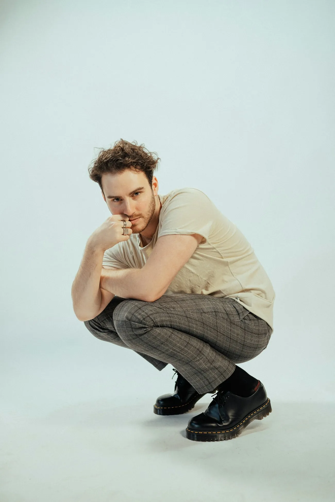

About STRYDE
Made for the street
A small studio making heavyweight streetwear in Pakistan, one drop at a time.
We make the clothes we couldn't find: heavy, boxy, and built to last.

How it started
Small runs. No shortcuts.
STRYDE started with one hoodie pattern and a search for fleece heavy enough to hold its shape. Today every piece is cut, sewn and washed in small batches, so each drop stays limited and the quality stays high.
0GSM fleece
0drops so far
0day exchange
0% cotton jersey
The process
From fabric to fit
01
Fabric first
We test every fabric for weight, shrinkage and how it feels after ten washes.
02
Cut boxy
Dropped shoulders, wide bodies and cropped hems: the STRYDE silhouette.
03
Wash & finish
Garment-washed for a soft hand and colour that wears in, not out.